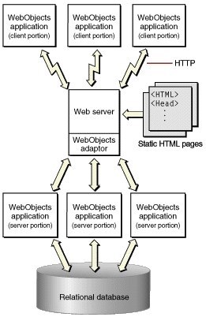

| PATH |

When you need the fast and rich user interface of desktop client-server applications, you can partition your application so that a portion of it—including all or part of the user interface—runs in Java directly on the client. Client-server communication is handled by WebObjects. WebObjects applications that are partitioned in this way are known as Java Client applications.
Java Client distributes the objects of your WebObjects application between the application server and one or more clients—typically Java applications. It is based on a distributed multi-tier client-server architecture where processing duties are divided between a client, an application server, a database server, and an HTTP server. With a Java Client application, you can partition business objects containing business logic and data into a client side and a server side. This partitioning can improve performance and at the same time help to secure legacy data and business rules.
Figure 2-3 illustrates a Java Client application in which the client portion is running as an application installed on the user's computer. As with an HTML-based WebObjects application, the application can communicate with the server side using HTTP. In addition, Java Client passes objects between a portion of your application residing on the user's computer and the portion of your application that remains on the application server.
Figure 2-3 A website running Java Client applications
Java Client allows your application to look and feel like a traditional desktop application and still take full advantage of the power of WebObjects.